Cómo llevar el inventario y los préstamos del laboratorio con el celular y etiquetas QR. Explicado paso a paso, para cualquier persona.
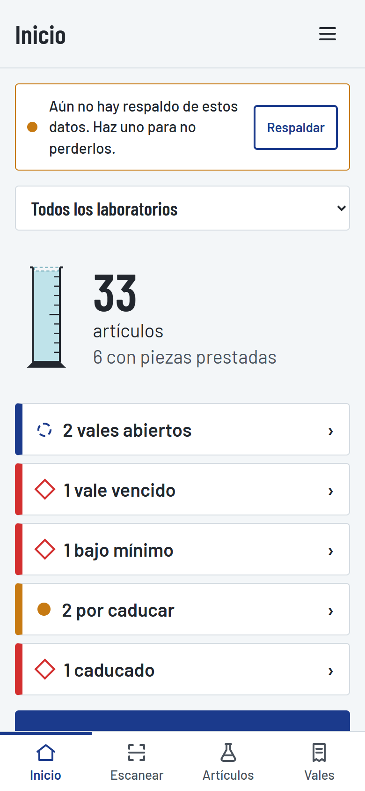
Escanea para abrir LabQR yeudielcm-sketch.github.io/labqr
CBTIS 108 · Prototipo de Desarrollo de Software · CNPyPE 2027 · Versión de la app 0.6.2 · Octubre de 2026
ANTES DE EMPEZAR
¿Qué es LabQR?
Es una aplicación gratuita para saber qué hay en el laboratorio, dónde está y quién lo tiene prestado. Cada artículo lleva una etiqueta con un código QR; con el celular se escanea para prestar, recibir o consultar.
Necesitas
No necesitas
Un celular (de preferencia Android con Chrome) y, la primera vez, internet.
Cuenta, contraseña, pagar ni descargar nada de una tienda. Tampoco internet después de la primera vez.
Palabras que usa la app
Palabra
Qué significa
Artículo
Cualquier cosa del inventario.
Equipo
Pieza única con número de serie: microscopio, balanza. Franja azul.
Material
Piezas que se prestan y pueden romperse: vasos, probetas, pinzas. Franja azul claro.
Reactivo
Se gasta en la práctica; tiene unidad (ml, g) y caducidad. Franja ámbar.
Vale
El papelito de préstamo, pero en el celular: quién se lleva qué y para qué práctica.
Recepción
Llegó material nuevo.
Merma
Algo se rompió, se perdió o caducó.
Existencia
Cuánto hay. La app lo dibuja como una probeta: el líquido es lo que hay en el laboratorio.
Contenido
Instalar la app
Conocer la pantalla
Probar con datos de ejemplo
Buscar y consultar artículos
Agregar artículos
Imprimir etiquetas QR
Escanear
Prestar material (vale)
Recibir la devolución
Recepción, merma y ajuste
Respaldo: no perder los datos
Tablero para TV
Si algo no funciona
PASO 1
Instalar la app
Se hace una sola vez y tarda un minuto.
Con la cámara del celular, escanea el QR de la portada (o escribe yeudielcm-sketch.github.io/labqr en Chrome).
Espera a que aparezca la pantalla de Inicio con una probeta vacía.
Toca el menú de Chrome ⋮ (arriba a la derecha) → Agregar a la pantalla principal → Instalar.
Desde ahora ábrela con el ícono azul de la probeta, como cualquier otra app.
¿iPhone?Abre el enlace en Safari → botón Compartir → Agregar a inicio.
Sin internetDespués de abrirla una vez con internet, funciona sin señal: el laboratorio no necesita Wi-Fi.
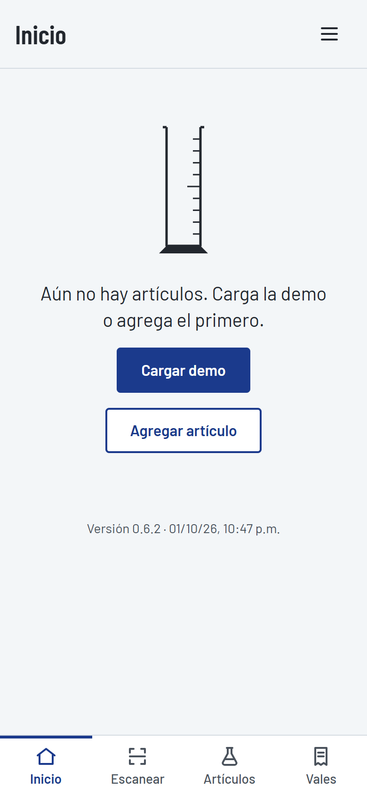
Así se ve la primera vez: todavía no hay artículos.
PASO 2
Conocer la pantalla
La barra de abajo
Siempre está visible y tiene las cuatro cosas que más se usan:
Inicio: el resumen del día.
Escanear: abre la cámara para leer una etiqueta.
Artículos: todo el inventario.
Vales: los préstamos.
El botón ☰ de arriba
Abre lo que se usa menos: Ajustes, Etiquetas, Respaldo y el Tablero para TV.
La flecha ‹
Regresa a la pantalla anterior.
Inicio: cada tarjeta lleva a su lista. Lo rojo con rombo ◇ pide atención.
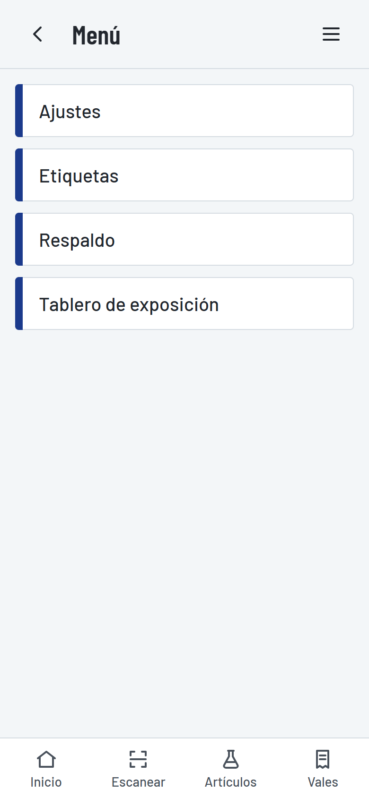
El menú ☰.
Cómo leer Inicio
Tarjeta
Qué quiere decir
◌ vales abiertos
Material que está prestado ahora.
◇ vale vencido (rojo)
Ya pasó la hora de devolver y algo no ha regresado.
◇ bajo mínimo (rojo)
Queda menos de lo necesario; hay que pedir más.
● por caducar (ámbar)
Reactivos que caducan en los próximos 30 días.
Aviso de respaldo
Pasaron más de 7 días sin respaldar (ver Paso 11).
PASO 3
Probar con datos de ejemplo
Para conocer la app sin capturar nada, carga un laboratorio de ejemplo con 33 artículos reales de Química y Biología.
Toca ☰ → Ajustes.
Toca Cargar datos de demostración.
Listo: Inicio ya muestra artículos, préstamos y avisos.
Antes de usarla de verdadBorra el ejemplo: en ☰ → Ajustes, al final, escribe BORRAR y toca Borrar todos los datos. Esto borra todo y no se puede deshacer.
Para usarla con tu laboratorio
En la misma pantalla de Ajustes agrega cada laboratorio con un prefijo de 2 a 5 letras (Química = QUI) y sus ubicaciones (anaqueles, gavetas). El prefijo aparece en cada código: QUI-0001, QUI-0002…
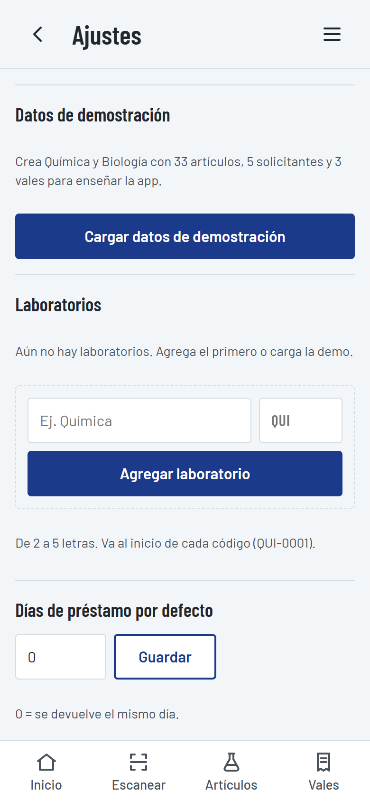
Ajustes: el botón azul carga el ejemplo.
PASO 4
Buscar y consultar artículos
En la pestaña Artículos está todo el inventario. Cada renglón muestra:
La franja de color según el tipo.
El código (lo que va impreso en la etiqueta).
Dónde está guardado.
Una probeta pequeña con cuánto hay.
Buscar
Escribe parte del nombre, el código o cualquier dato (marca, concentración…). No importan acentos ni mayúsculas: alcohol encuentra Alcohol etílico.
Los botones de abajo filtran por tipo, Bajo mínimo y Por caducar.
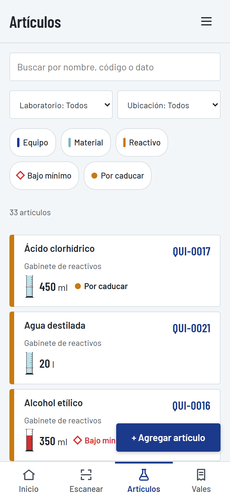
La lista completa.
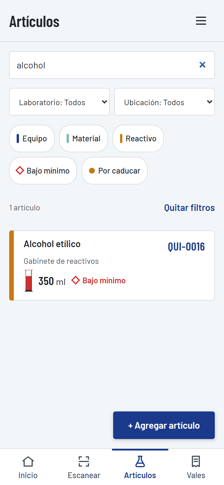
Buscando "alcohol": aparece en rojo porque está bajo el mínimo.
PASO 4 · CONTINUACIÓN
La ficha de un artículo
Toca cualquier artículo (o escanea su etiqueta) para ver su ficha.
Cómo leer la probeta
Líquido azul: lo que está en el laboratorio.
Parte punteada: lo que está prestado.
Línea roja: el mínimo. Si el líquido baja de ahí, se pone rojo.
A un lado aparecen los números: en lab, prestados, total y mín.
El equipo es distinto
Un microscopio o una balanza es una sola pieza, así que en vez de probeta dice "En su lugar" o "Prestado a…" con el nombre de quien lo tiene.
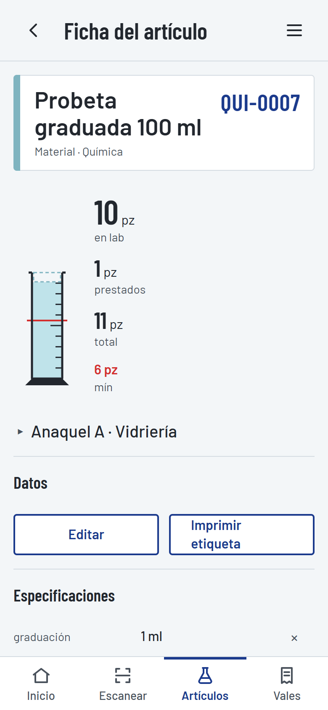
Probeta de 100 ml: 10 en el laboratorio y 1 prestada.
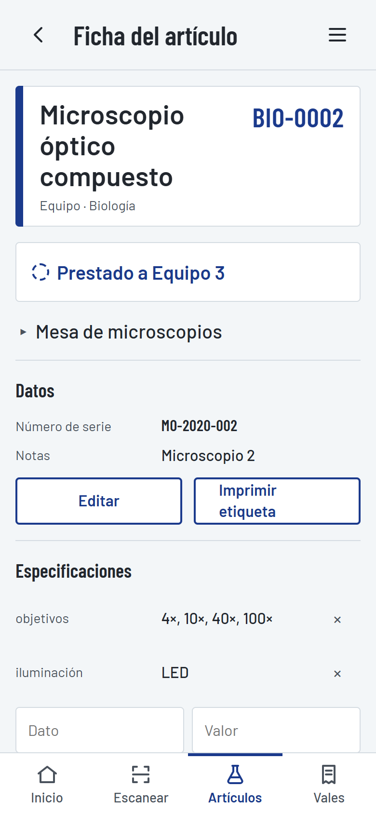
Un microscopio prestado al Equipo 3.
Historial
Al final de la ficha está todo lo que le ha pasado al artículo: cuándo llegó, a quién se prestó, qué regresó y qué se rompió y a cargo de quién.
El historial no se puede borrar ni editarAsí nadie puede cambiar lo que pasó. Si te equivocas, se corrige con un movimiento nuevo (por ejemplo, un ajuste por conteo).
Especificaciones
Agrega los datos que pida cada maestro (marca, modelo, voltaje, concentración…) con Agregar dato. También sirven para buscar.
La probeta rota queda registrada con su responsable.
PASO 5
Agregar artículos
Ve a Artículos y toca + Agregar artículo.
Escribe el nombre y elige el tipo: equipo, material o reactivo. El formulario cambia según lo que elijas.
Elige laboratorio y ubicación.
Escribe la cantidad que hay hoy y el mínimo (si no aplica, déjalo en 0).
En reactivos, pon la fecha de caducidad. En equipo, el número de serie.
Toca Guardar. La app le pone su código automáticamente.
El código no cambia nuncaPorque va impreso en la etiqueta. Si te equivocas de nombre o ubicación, usa Editar en la ficha.
¿Muchos artículos?Puedes cargarlos todos desde Excel con la plantilla de ☰ → Respaldo → Importar inventario inicial.
Un artículo que ya no se usa se archiva (desaparece de la lista pero conserva su historial).
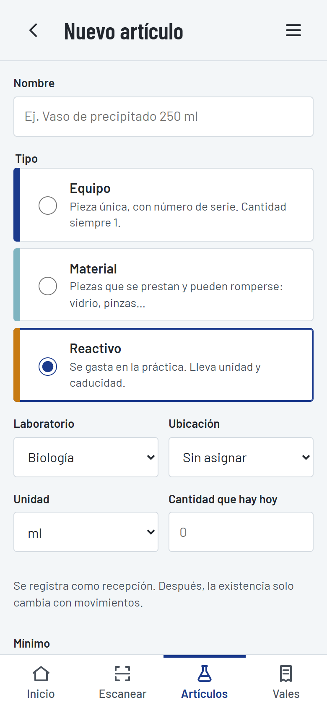
Agregando un reactivo.
PASO 6
Imprimir etiquetas QR
Toca ☰ → Etiquetas.
Marca los artículos. Para todo un anaquel: elige la ubicación y toca Todos los de esta vista.
Elige el tamaño: Grande (10 por hoja) o Chica (24 por hoja).
Toca Imprimir. En la ventana de impresión: hoja carta y escala 100 %.
Recorta y pega cada etiqueta en su artículo o en su lugar del anaquel.
Desde la ficha de cualquier artículo, Imprimir etiqueta abre la hoja con ese artículo ya marcado.
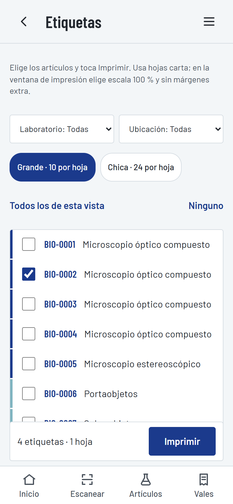
Eligiendo artículos.
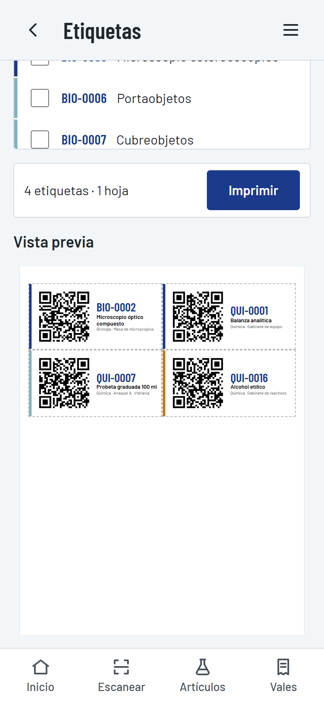
Vista previa de la hoja.
Así queda una etiqueta: QR, código grande, nombre y dónde se guarda. La franja indica el tipo.
Lo mejor de la etiquetaCualquier persona puede escanearla con la cámara normal de su celular, sin instalar nada, y ver qué es, dónde va y si está prestado.
PASO 7
Escanear
Toca la pestaña Escanear. La primera vez el celular pide permiso para usar la cámara: tócale Permitir.
Apunta a la etiqueta, dentro del recuadro.
Cuando la lee, el celular vibra y abre la ficha del artículo.
Si la cámara no lee
Acerca o aleja un poco el celular y busca buena luz.
O escribe el código en el campo de abajo y toca Abrir ficha. No necesitas escribirlo completo: qui 7 abre QUI-0007.
"No hay permiso para usar la cámara"En Chrome toca el candado junto a la dirección → Permisos → Cámara: Permitir, y luego Reintentar.
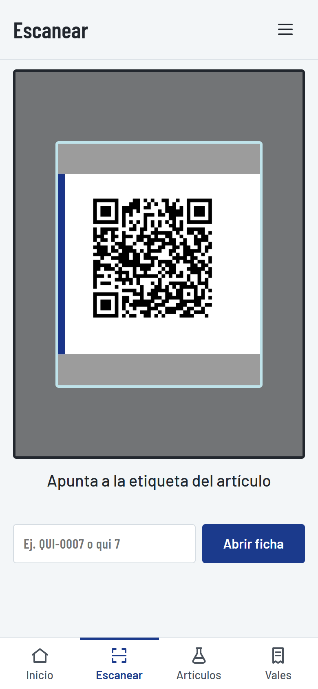
Apuntando a una etiqueta.
PASO 8
Prestar material (vale)
Es lo que más se usa: un equipo de alumnos llega por el material de su práctica.
Toca + Nuevo vale (en Inicio o en Vales).
Solicitante: elige quién se lo lleva. Si no está en la lista, toca + Nuevo solicitante y agrégalo ahí mismo (nombre, tipo, grupo).
Práctica: escribe cuál es (opcional).
Toca Escanear artículos y escanea cada etiqueta una tras otra. Cada lectura suma 1 y suena un bip. Escanear dos veces el mismo vaso = 2 vasos.
Ajusta cantidades con − y +. En reactivos escribe la cantidad (por ejemplo 25.5 ml).
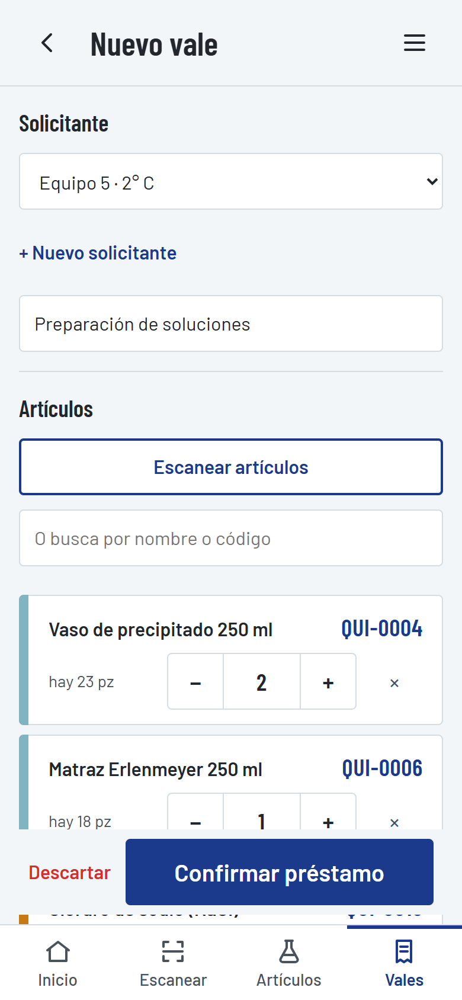
Arriba: solicitante y práctica.
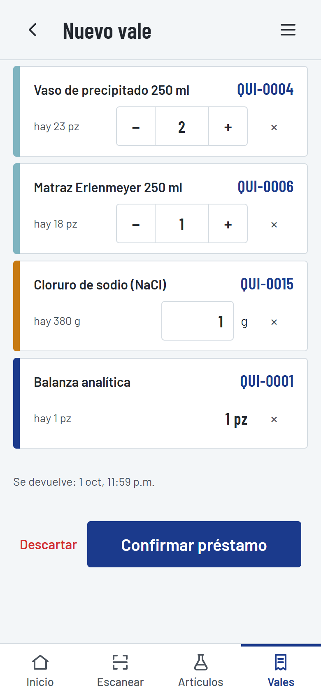
Abajo: lo que se lleva, con cuánto hay.
Toca Confirmar préstamo. Es un solo toque.
La app muestra Préstamo confirmado, cómo bajan las probetas y cuántos segundos tardaste.
La app te cuidaNo deja prestar más de lo que hay en el laboratorio: lo marca en rojo. Si te sales a revisar algo, el vale que estabas armando te espera al regresar; si no lo quieres, toca Descartar.
La hora de devolución es el mismo día a las 11:59 p.m. (se puede cambiar en Ajustes → Días de préstamo).
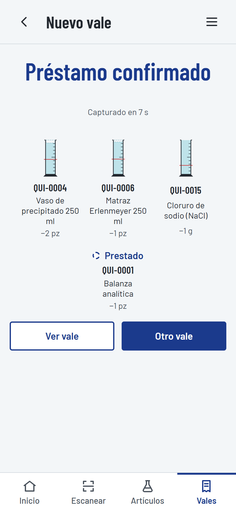
Préstamo confirmado.
PASO 9
Recibir la devolución
Ve a Vales. Los vencidos aparecen primero, en rojo.
Toca el vale del equipo que está devolviendo.
En cada artículo toca lo que pasó:
Devuelto regresó. Si fue solo una parte, cambia el número antes de tocar.
Roto o perdido queda como merma a cargo de ese equipo (pide confirmar).
Consumido solo en reactivos: se gastó en la práctica.
Si todo regresó bien, basta con Todo regresó completo.
El vale se cierra soloCuando ya no queda nada pendiente, la app lo marca como cerrado.
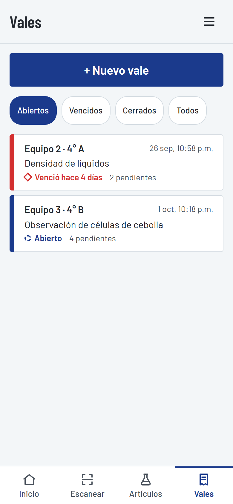
Lista de vales: el vencido va arriba.
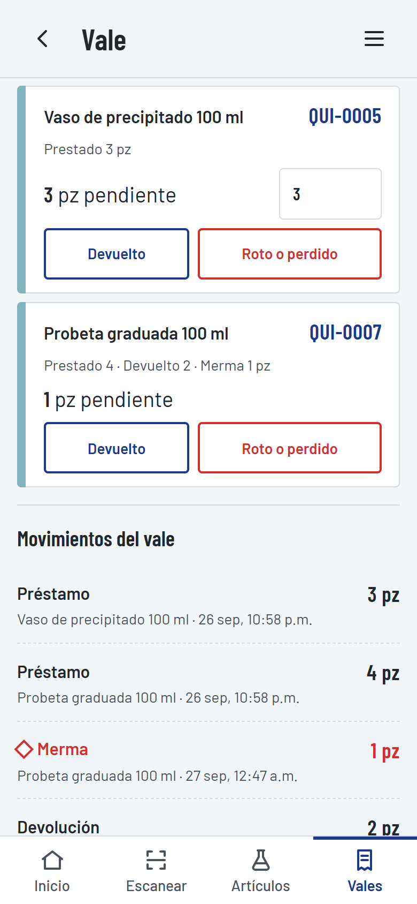
Botones por artículo y lo que ya pasó.
PASO 10
Recepción, merma y ajuste
Para lo que pasa fuera de un préstamo. Se hace desde la ficha del artículo, en Registrar movimiento.
Botón
Cuándo usarlo
Qué escribir
Recepción
Llegó material nuevo (compra o donación).
Cantidad y una nota (ej. "Compra del plantel").
Merma
Algo se rompió, se perdió o caducó en el laboratorio.
Cantidad, motivo y nota.
Ajuste por conteo
Contaste físicamente y no coincide con la app.
Lo que contaste y por qué hay diferencia (obligatorio). La app calcula la diferencia sola.
EquipoUn equipo solo tiene Merma (darlo de baja). Se presta con un vale como todo lo demás.
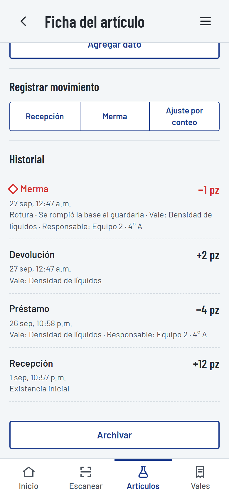
Los tres botones en la ficha.
PASO 11
Respaldo: no perder los datos
ImportanteLos datos viven solo en este celular. Si se pierde, se rompe o se borra el navegador, solo un respaldo los recupera. Haz uno cada semana; Inicio te avisa cuando toca.
Hacer un respaldo
Toca ☰ → Respaldo.
Toca Compartir respaldo y mándalo a tu WhatsApp, correo o Drive. (O Descargar respaldo para guardarlo en el celular.)
Recuperar los datos
En el celular nuevo (o después de borrar), abre ☰ → Respaldo.
Toca Restaurar desde archivo y elige el archivo labqr-respaldo-….json.
La app dice qué trae y pide confirmar. Todo regresa tal cual.
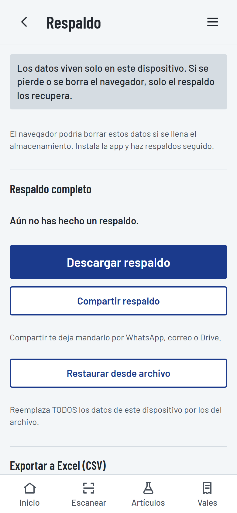
Respaldo completo.
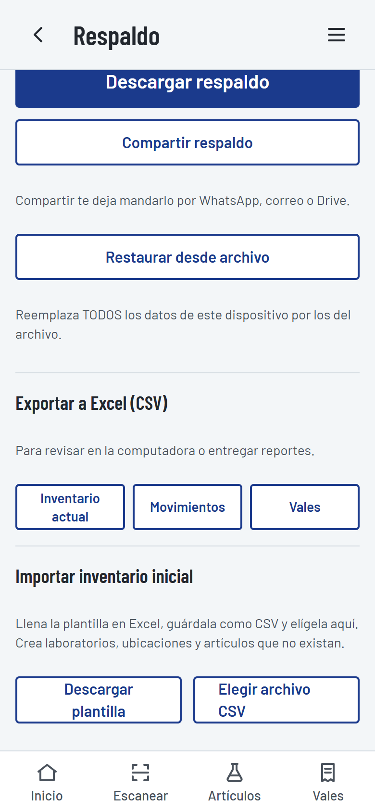
Excel e importación.
Excel
Exportar a Excel (CSV): inventario actual, movimientos o vales, para revisar en la computadora o entregar reportes.
Importar inventario inicial: descarga la plantilla, llénala en Excel, guárdala como CSV y elígela. La app avisa qué renglones tienen errores antes de importar.
PASO 12
Tablero para TV
Para exposiciones o para dejarlo a la vista en el laboratorio: muestra todo el inventario de un vistazo, legible a 3 metros.
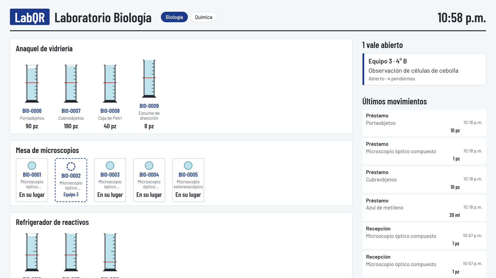
Una fila de probetas por anaquel; a la derecha los vales abiertos y los últimos movimientos.
En una laptop conectada a la TV, abre LabQR y toca ☰ → Tablero de exposición. Presiona F11 para pantalla completa.
Arriba eliges el laboratorio.
Abre LabQR en otra ventana de la misma laptop y haz préstamos ahí: el tablero cambia solo al momento.
¿Por qué en la misma laptop?En esta versión cada dispositivo guarda sus propios datos. Si quieres ver en la laptop lo del celular, pásale un respaldo (Paso 11).
PASO 13
Si algo no funciona
Qué pasa
Qué hacer
No aparece una pantalla o función nueva.
Revisa la versión al pie de Inicio. Con internet, toca ☰ → Ajustes → Buscar actualización, o cierra y abre la app dos veces.
La cámara no abre.
Da permiso de cámara (Paso 7) y toca Reintentar. Mientras, escribe el código a mano.
La cámara no lee la etiqueta.
Más luz, etiqueta sin arrugas, a unos 15 cm. O escribe el código.
"No existe un artículo con el código…"
Esa etiqueta es de otro celular o se borraron los datos. Restaura tu respaldo.
No me deja confirmar el vale.
Falta elegir solicitante, o pides más de lo que hay (renglón en rojo).
No me deja cambiar la unidad o el código.
Es a propósito: el código va impreso y la unidad se fija cuando ya hay historial.
Me equivoqué al registrar algo.
El historial no se borra. Corrige con otro movimiento (por ejemplo, Ajuste por conteo con una nota).
Cambié de celular.
En el viejo: Compartir respaldo. En el nuevo: instala la app y Restaurar desde archivo.
Para pedir ayudaManda la versión (pie de Inicio) y una captura de pantalla de lo que ves.